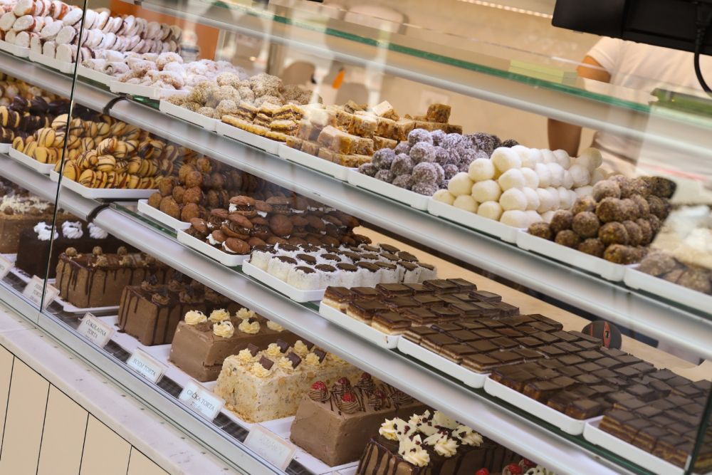
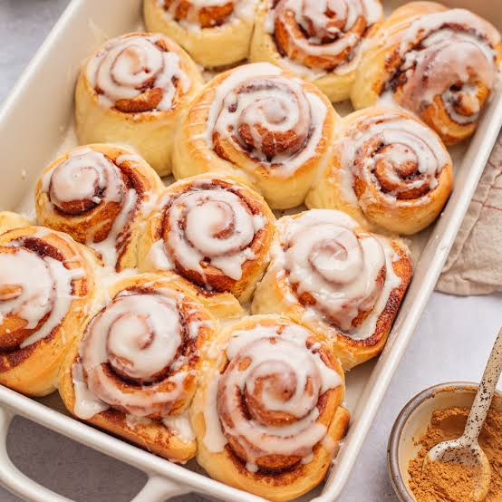
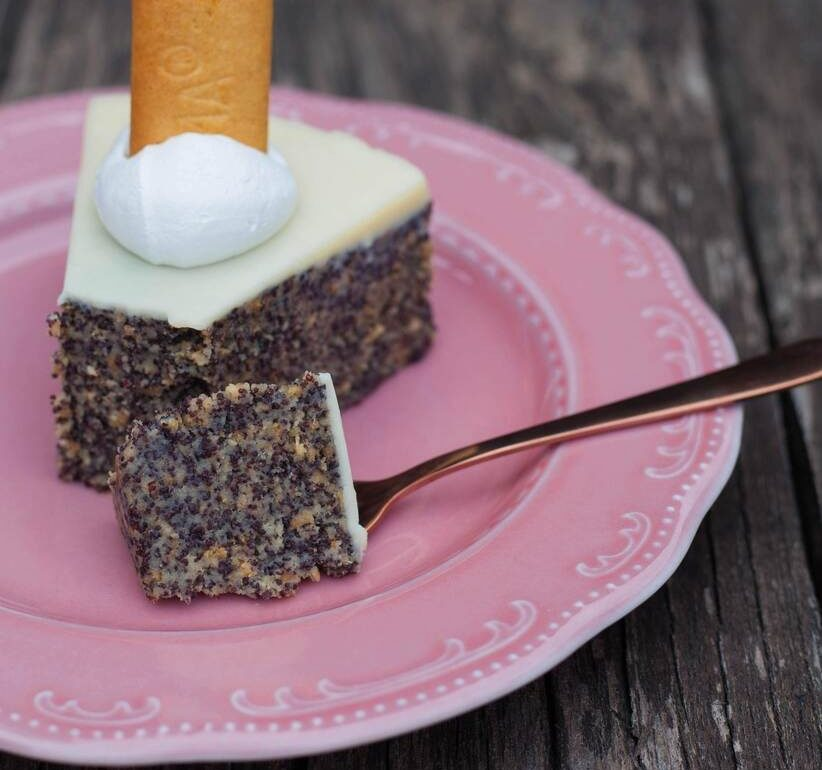

Kindertårta
En lyxig chokladtårta med flera goda fyllningar.
Kindertårta
En lyxig chokladtårta med flera goda fyllningar.
Kindertårta
Mjuka och goda kanelbullar
Cinnamon rolls
En krämig tårta med vallmofrön och vit choklad.
VallmofrötårtaTesta gärna de här goda recepten genom att klicka på länkenarna ovan.